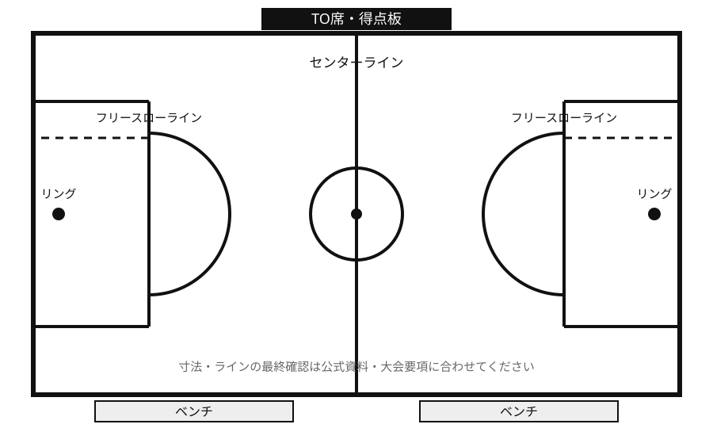

ポータルコーチ
困ったことを選ぶと、確認したい問いに進めます。
1. 近い悩みを選ぶ
2. 確認したい問いを選ぶ
上の悩みを選ぶと、問いが表示されます。
よくある質問
Drive内の公式資料をもとにした要点です。大会ごとの変更、会場指示、審判判断がある場合はそちらを優先します。
ミニバスの出場ルールはどう考えればいい？
公式競技規則では、チームメンバーはゲーム開始前にスコアシートへ氏名が記入されていることが前提です。ゲーム中は各チーム5人でプレーします。
10人以上でエントリーする場合は、第3クォーターまでに10人以上が少なくとも1クォーター以上、2クォーターをこえない時間だけ出場します。8人以上10人未満でエントリーする場合は、第3クォーターまでに全員が少なくとも1クォーター出場します。
第3クォーターまでに同じ選手が続けて3クォーター出場することはできません。人数条件を満たすために4人以下でプレーすることも認められていません。
根拠：01_2026ミニバスケットボール競技規則.pdf 第4条
24秒ルールって何？
公式競技規則では、コート上でライブのボールをコントロールしたチームは24秒以内にショットをしなければなりません。
24秒以内のショットとして認められるには、ブザーの前にボールが手から離れ、その後リングに触れるかバスケットに入る必要があります。ブザー前に放たれたボールがリングに触れた場合は、バイオレーションではありません。
ミニバスではフロントコート・バックコートの規定を使わず、基本は24秒で考えます。リングに触れた後、攻撃側が再びコントロールした場合は14秒になります。
根拠：01_2026ミニバスケットボール競技規則.pdf 第29条・第50条
会場準備では何を見ればいい？
公式競技規則では、コートは境界線の内側で縦28mから22m、横15mから12mです。ライン幅は5cm、センターサークルとフリースローセミサークルは半径1.80mです。
フリースローラインは、バックボード面の真下から遠い側の縁まで4.00mです。リング上端は床から2.60m、ボールは5号または軽量5号を使用します。
会場では、コートライン、リング高さ、TO席、チームベンチエリア、得点板、ショットクロック、ブザー、スコアシートを確認します。コート規格やフロア寸法は大会主催者の考えで変更される場合があります。

大きく見る根拠：01_2026ミニバスケットボール競技規則.pdf 第2条・第3条
ホームとアウェイのユニフォーム色は？
公式競技規則では、各チームは濃淡それぞれのユニフォームを用意します。プログラムで最初に記載されているチーム、またはホームチームは淡色を着用し、白色が望ましいとされています。
プログラムで2番目に記載されているチーム、またはビジターチームは濃色を着用します。両チームが了解した場合は、濃淡を交換できます。
大会要項や当日の連絡で指定がある場合は、その指定を優先します。
根拠：01_2026ミニバスケットボール競技規則.pdf 第4条
スコアシートはどう書く？
公式競技規則では、スコアラーがスコアシートを用意し、チーム情報、出場する5人、交代要員、得点、プレーヤーファウル、コーチのファウル、タイムアウト、オルタネイティングポゼッションなどを記録します。
スコアボードとスコアシートが合わず解決できない場合は、スコアシートを優先します。記録ミスに気づいた場合は、次にボールがデッドになったときに審判へ知らせ、クルーチーフと確認します。
ミニバスでは、ミニバスケットボールオフィシャルスコアシートを使用します。
根拠：01_2026ミニバスケットボール競技規則.pdf 第3条・第48条、12_ミニバスケットボール_オフィシャルスコアシート.pdf
タイマーはいつ止める？
公式競技規則では、ゲームクロックは各クォーターやオーバータイムの時間終了、ボールがライブで審判が笛を鳴らしたとき、タイムアウトを請求していたチームの相手がゴールしたとき、チームがボールをコントロールしている状態でショットクロックのブザーが鳴ったときに止めます。
ミニバスでは、第4クォーターやオーバータイム残り2分以下でゴール成功時にゲームクロックを止める規定は適用しません。
タイムアウトは審判が笛を鳴らしてシグナルを示したときに計り始め、35秒で審判へ知らせ、45秒で終了ブザーを鳴らします。
根拠：01_2026ミニバスケットボール競技規則.pdf 第49条
当番や配車の確認先は？
当番や配車は、公式競技規則で定める内容ではありません。北陽のチーム運用として、ポータル内の当番フォーム、配車フォーム、チーム資料、担当者からの連絡を確認します。
締切日、集計方法、決定事項の共有先は北陽側で決める項目です。ヒアリング後に、確認先と流れをここへ反映します。
区分：公式競技規則ではなく北陽運用
試合後、子どもに何を言えばいい？
試合後の声かけは、公式競技規則で定める内容ではありません。競技規則上は、審判の判定やゲーム結果を尊重し、抗議が必要な場合も定められた手続きで扱います。
保護者の声かけとしては、結果だけでなく、戻りの速さ、声かけ、リバウンド、挑戦したこと、切り替えられたことなど、実際に見えた行動を具体的に伝える形にします。
北陽として大事にする声かけは、チーム方針を確認してから追加します。
区分：公式競技規則ではなく育成方針・チーム方針
ルール確認
読み込み中です…